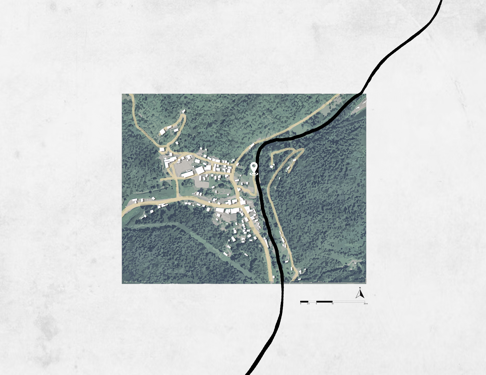
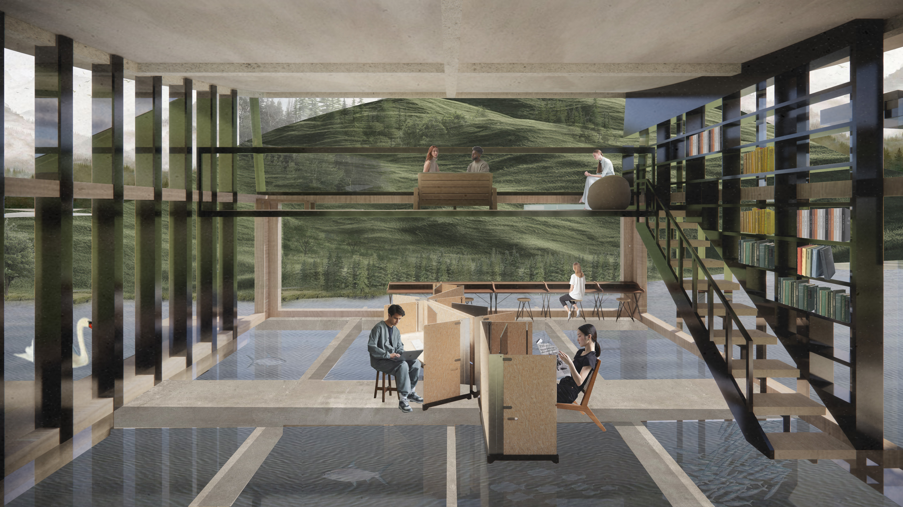
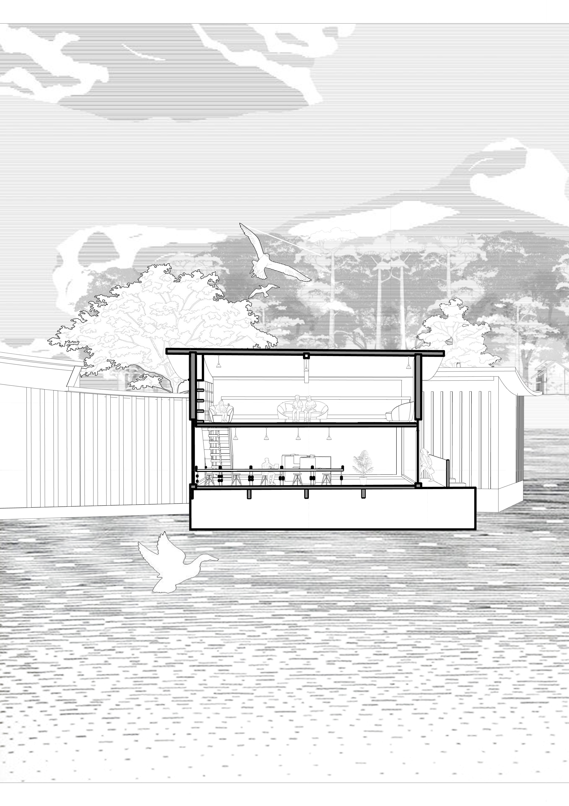
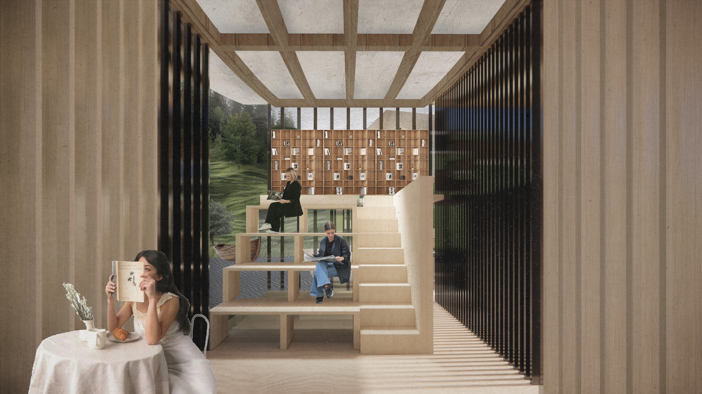
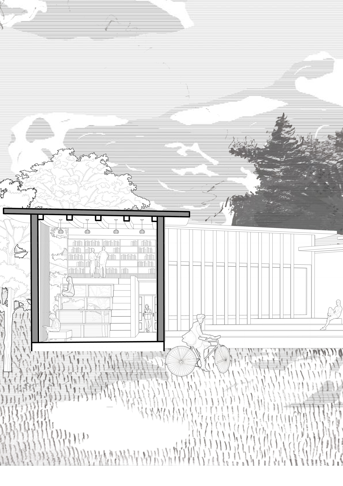
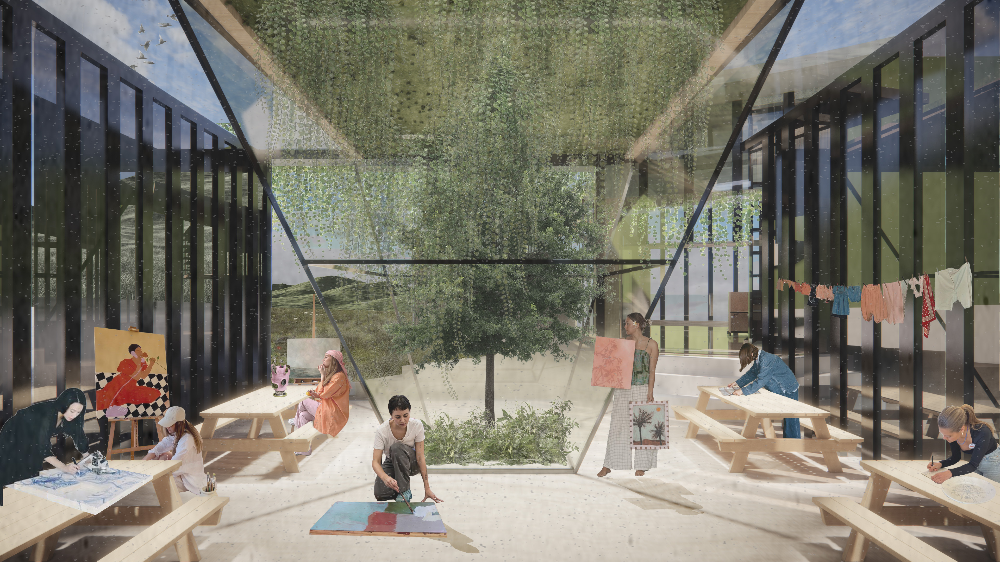
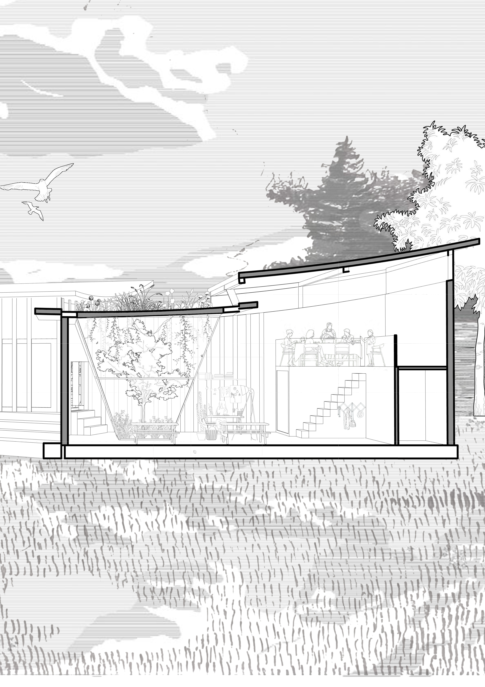
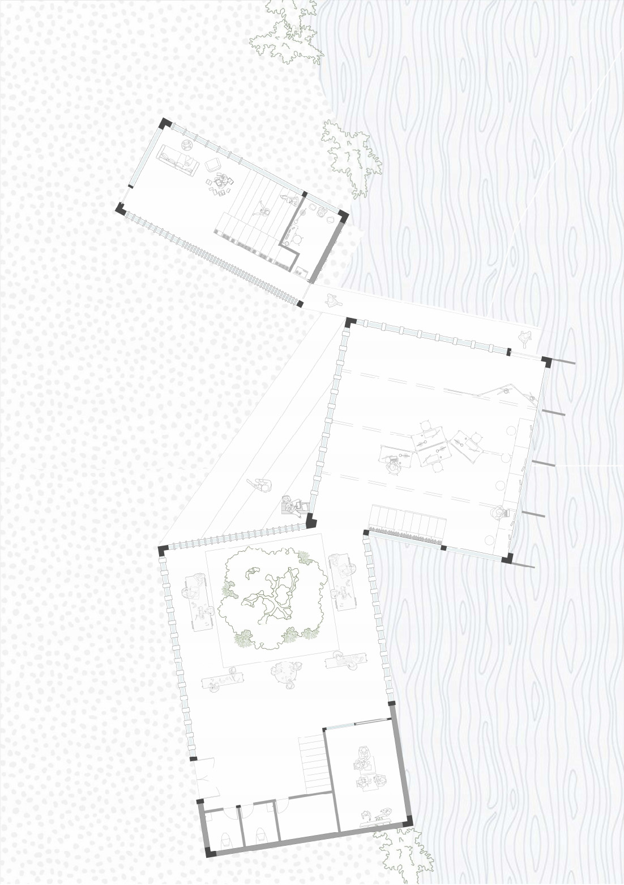
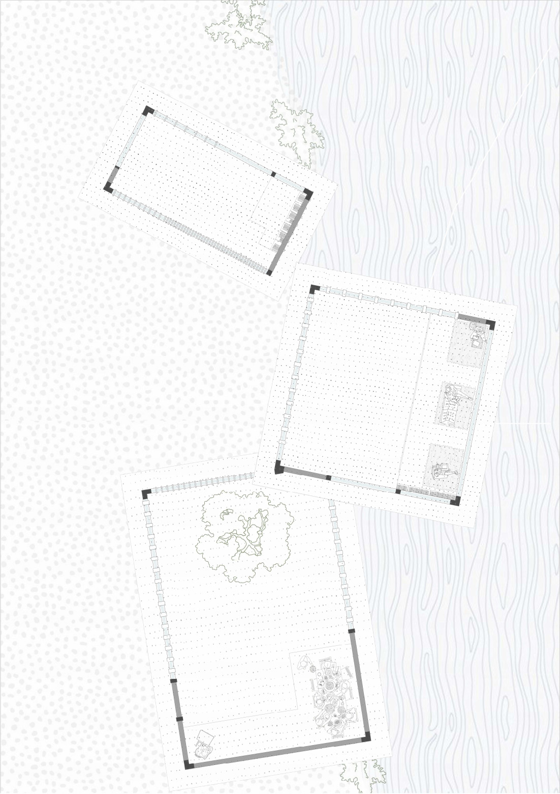

Architecture
Mobile Bridge
Site Analysis: Hyden is a small town in the US state of Kentucky facing severe socioeconomic challenges, including limited employment, high population loss, an aging demographic, and a serious substance abuse problem. The design tackles these local issues with architectural ingenuity, introducing a vertically stacked 'productive space' where crafts and gardening serve to relieve stress and combat local drug addiction.
Concept: Adopting the concept of 'mobile bridges', the building links the three natural elements of the neighborhood—the river, the park, and the forest—forming a cultural 'flow belt'. The architecture extends outward like a bridge, with each section serving as a distinct functional hub.



River Direction
The middle part of the bridge can be situated above the river, with a multimedia reading area on the ground floor and a viewing area on the first floor, with bookshelves rising to the first floor with steps. The building is erected on a concrete structure with a glass floor that allows the user to see the river at their feet.


Forest Direction
One end of the bridge is connected to the forest. Users view and read from stepped chairs, with glass underneath the steps, and a glance across to the woods on the other side gives a sense of permeability. At the end of the ground floor is a meditation area. The first floor is elevated with bookshelves.


Park Direction
The indoor public space is an open space for medical and psychological support, where small workshops on sustainable agriculture and handicrafts can also be held, leading to spiritual healing and collective activities.


